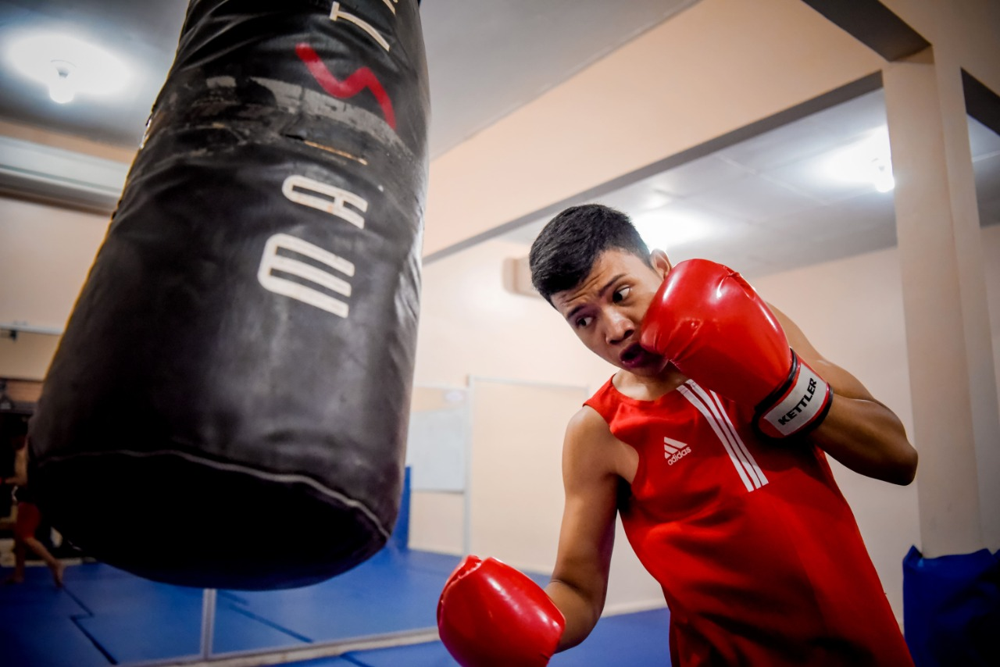
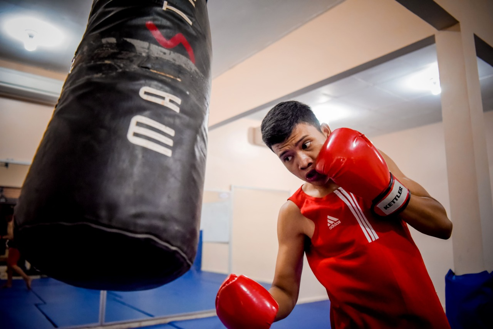

Berikut ini adalah PROGRAM STUDI FTIK

Menyiapkan tenaga profesional yang memiliki kompetensi di bidang teknologi informasi namun juga memiliki karakter mandiri

Berkomitmen untuk menghasilkan lulusan di bidang teknik informasi yang difasilitasi oleh teknologi.

Teknik Ilmu Komputer dan keterampilan profesional di bidang Teknologi Informasi.
Teknik Tenaga Listrik adalah bidang ilmu yang mempeljari teknik-teknik yang berhubungan dengan tenaga listrik dan permasalahannya sehingga tenaga listrik dapat disalurkan dengan baik.

Menjadi lembaga pendidikan yang unggul dalam kontribusinya terhadap pembangunan infrastruktur yang berkelanjutan.

Memberikan kompetensi dengan dasar-dasar akuntansi dan bisnis yang dibutuhkan.
Berikut ini adalah PROGRAM STUDI FEB

Menjadi Program Studi Unggulan Akuntansi di Tingkat Nasional, Regional, dan Global.

Menguasai keterampilan konseptual dan penerapannya dalam bidang manajemen bisnis di lingkungan global berbasis teknologi informasi
Berikut ini adalah PROGRAM STUDI FSIP

Mengembangkan penelitian di bidang pengajaran dan matematika dan mempublikasikannya di tingkat nasional dan internasional.

Pendidikan bahasa Inggris yang berkualitas melalui kurikulum yang bersinergi dengan dunia kerja dan didukung oleh keunggulan teknologi dan informasi.
Beberapa Moment Prestasi Yang diraih oleh Mahasiswa UNIVERSITAS TEKNOKRAT INDONESIA


 

Beberapa Fasilitas yang ada di UNIVERSITAS TEKNOKRAT INDONESIA